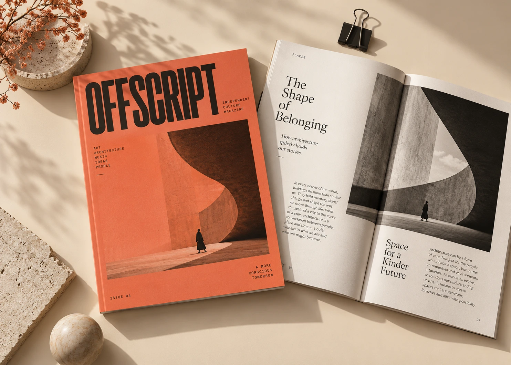

Every design project begins long before the first shape is drawn. It starts with paying attention: to the people behind a brand, to the context around it, and to the small details that make it different.
Start with understanding.
Ask what the work needs to do. Who is it for? What should they understand, feel or remember? A clear answer is more useful than a long list of visual references. It gives the team something shared to return to when a project gets complicated.
Make room for exploration.
The first idea is a starting point. Sketch widely, test different directions and give unexpected connections a little space. Good creative work often comes from combining something familiar with a perspective we haven’t considered yet.

Refine with intention.
Editing is part of designing. Remove the elements that don’t serve the idea. Test the system at different scales, in different contexts, and with real content. A design becomes stronger when every choice has a purpose.
Leave room for the next chapter.
A useful identity is a framework for the future. Build in enough consistency to feel recognizable, and enough flexibility to grow. The most memorable brands keep their character while finding new ways to express it.
An original demonstration article for the Stackly portfolio.